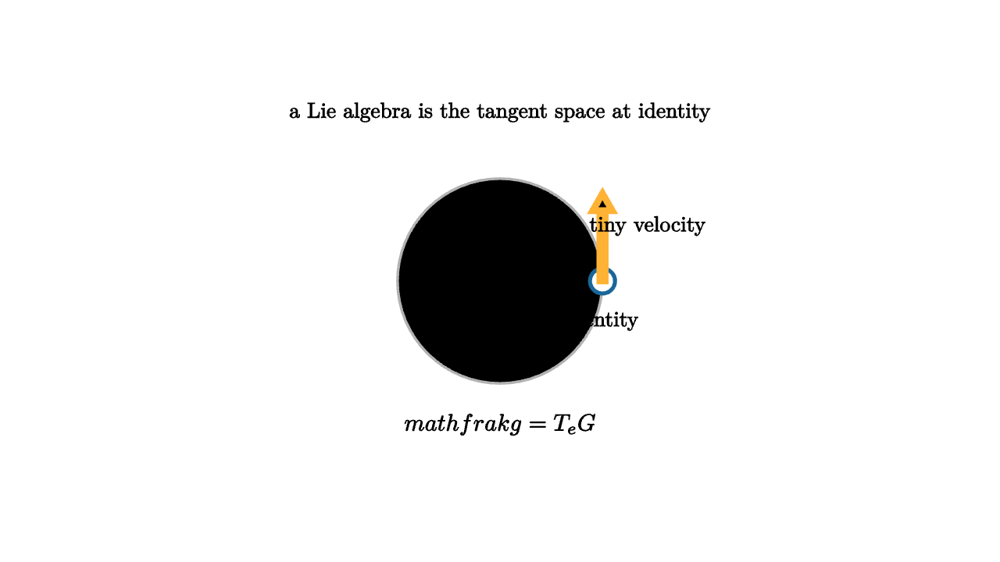

Lie Algebras Are Infinitesimal Motion
Hold your hand flat on a table and rotate it a tiny amount. The pose changes, but the tiny command feels linear: rotate a little clockwise, rotate a little more, add small angular velocities. Lie groups are curved spaces of symmetries. Lie algebras are the linear spaces of tiny motions sitting at the identity.
For the circle group SO(2), the identity is the rotation by angle 0. A tiny velocity is just an angular rate. For the rotation group SO(3), a tiny velocity is an axis with a speed. For the rigid motion group SE(3), a tiny velocity combines angular velocity and translational velocity, the familiar twist used in robotics.

source
mesh scene = [
center{1.35u} Text("a Lie algebra is the tangent space at identity", 0.62),
stroke{LIGHT_GRAY, 2} Circle(0.82),
center{[0.82, 0, 0]} fill{WHITE} stroke{BLUE, 3} Circle(0.1),
center{[0.82, -0.32, 0]} Text("identity", 0.62),
stroke{ORANGE, 5} Arrow([0.82, 0, 0], [0.82, 0.7, 0]),
center{[1.18, 0.44, 0]} Text("tiny velocity", 0.62),
center{1.15d} Tex("\\mathfrak g = T_eG", 0.68)
]For matrix Lie groups, the Lie algebra often appears as a set of matrices. The Lie algebra of SO(2) consists of matrices
The Lie algebra of SO(3) consists of skew-symmetric matrices. Each such matrix encodes a cross product with an angular velocity vector. This is why 3D rotation computations often convert between a vector omega and a matrix hat(omega).
The extra operation in a Lie algebra is the bracket. For matrix Lie algebras, the bracket is the commutator
This expression measures how two tiny motions fail to commute. If you rotate a book a little around the x axis and then a little around the y axis, the final pose differs slightly from doing those tiny rotations in the reverse order. The leading correction lives in the bracket direction.
source
let Frame = |angle, pos, col| [
center{pos} rotate{angle} stroke{col, 5} Arrow([0, 0, 0], [0.55, 0, 0]),
center{pos} rotate{angle} stroke{TEAL, 5} Arrow([0, 0, 0], [0, 0.45, 0])
]
"Identity"
mesh title = center{1.34u} Text("small motions add, brackets remember order", 0.62)
mesh frame = Frame(0, 0r, BLUE)
mesh note = center{1.15d} Text("start at the identity frame", 0.62)
play Fade(0.7)
play Write(0.7)
"Velocity"
frame = Frame(0.55, 0.25r, ORANGE)
play Lerp(1.0)
note = center{1.15d} Text("a Lie algebra element gives a tiny direction", 0.62)
play Trans(0.6)
"Bracket"
frame = [
Frame(0.55, 0.62l, ORANGE),
Frame(-0.35, 0.62r, MAGENTA),
stroke{WHITE, 4} Arrow([-0.18, 0, 0], [0.18, 0, 0]),
center{[0, -0.72, 0]} Tex("[X,Y]=XY-YX", 0.62)
]
play Trans(1.0)The bracket is a local shadow of group multiplication. Near the identity, the group looks almost like its tangent vector space. The word "almost" carries the geometry. Addition of tangent vectors captures first-order behavior. The bracket captures second-order order-dependence.
In physics, this distinction is everywhere. Angular momentum components satisfy bracket relations. Symmetries of a physical system form Lie groups, and their infinitesimal generators form Lie algebras. Conservation laws often arise from continuous symmetries through Noether's theorem. The algebra of generators tells how conserved quantities interact.
In robotics, Lie algebras make pose updates practical. A robot state may live in SE(3), while sensor errors are small vectors in the Lie algebra. Optimization adjusts the pose through a twist, then maps that twist back to the group. The computation uses linear algebra locally and group composition globally.
In graphics, Lie algebras support smooth interpolation and stable simulation of rotations. A character's joint rotation can be nudged by a small algebra element, then returned to the rotation group. This avoids treating constrained rotations as arbitrary vectors.
The conceptual lesson is compact. A Lie group answers "which symmetries can I perform?" A Lie algebra answers "which infinitesimal commands can I issue from the identity?" The bracket answers "how does the order of tiny commands matter?" From those three questions, modern geometry gets a linear handle on nonlinear motion.